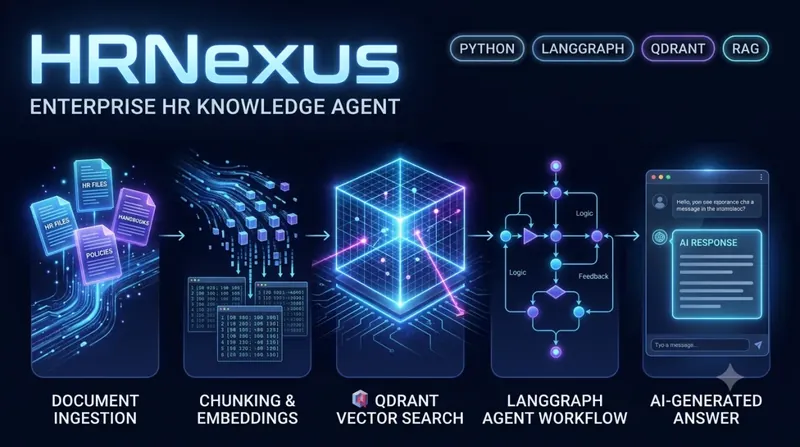
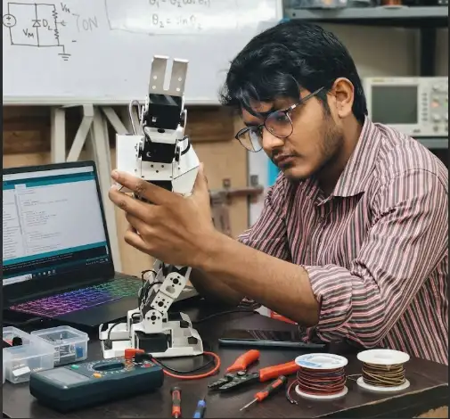

AI Engineering
An AI knowledge system that retrieves and works with information from HR documents through document ingestion, chunking, embeddings and vector search.
Building agentic RAG workflows
I'm Avishek Mondal, an AI engineer at Viraya SKAI. I work across agentic AI, RAG, computer vision and robotics, from autonomous workflows to embedded devices.

Projects
Engineering projects spanning AI systems, computer vision and robotics. Select one to see how it works.

AI Engineering
An AI knowledge system that retrieves and works with information from HR documents through document ingestion, chunking, embeddings and vector search.

AI Engineering
A workflow-based agent for IT support questions: it retrieves knowledge, evaluates the evidence, and falls back to web search when needed.

Computer Vision
Pixel-level landslide segmentation on the Landslide4Sense dataset (128 × 128 patches, 14 bands including Sentinel-2, slope and elevation data) using a U-Net.

Computer Vision
Image classifier for six panel conditions: bird-drop, clean, dusty, electrical damage, physical damage and snow-covered. Streamlit interface, deployed on an AWS EC2 Linux instance.
Experience
Viraya SKAI · Kolkata, West Bengal
Reboot Robotics Academy
Indian Institute of Information Technology, Kalyani
Architecture
Illustrative workflows based on each project's architecture. Pick one to watch the data move through it.
Simplified diagrams; see each repository for the real implementation.
Stack
Technologies and tools, grouped by domain.